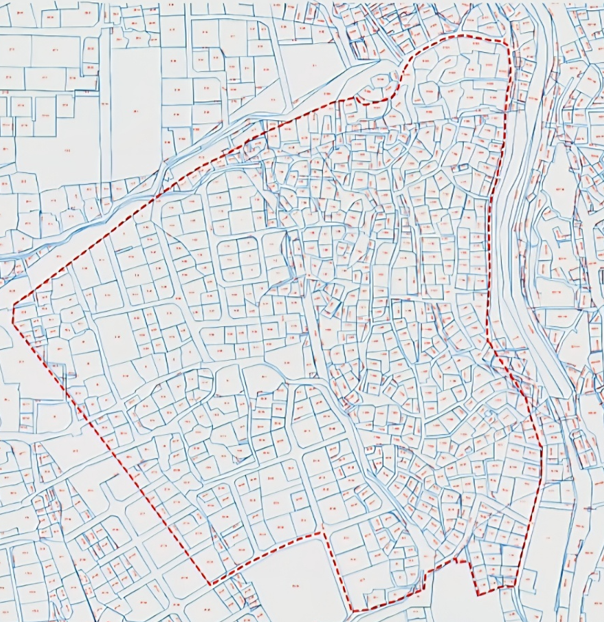

1. 사업 기본 현황 및 도심복합개발 전환 배경
| 사업 명칭 |
충신동 15-9 일원 도심복합개발사업 (성장거점형 민간복합개발 및 수직입체도시 프로젝트) |
| 위치 및 면적 |
서울특별시 종로구 충신동 15-9번지 일원 / 총 80,439.3㎡ (약 24,333평) |
| 용도지역 현황 |
• 제1종일반주거지역: 30,860.6㎡ (38.3%) — 성곽 인접 보전/공원화 구역
• 제2종일반주거지역: 37,525.6㎡ (46.7%) — 아랫마을 복합개발 핵심부
• 제3종일반주거지역: 7,409.8㎡ (9.2%) — 율곡로 인접 개발부
• 일반상업지역: 4,643.3㎡ (5.8%) — 동대문 역세권 상업축
|
| 도로 및 접도 |
폭 20m 이상 간선도로(율곡로) 직접 접도 및 2면 이상 도로 접도 요건 충족 |
| 주요 법적 근거 |
• 「도심 복합개발 지원에 관한 법률」 (2024.1 제정, 2026.7 시행)
• 「서울특별시 도심 복합개발 지원에 관한 조례 및 시행규칙」 (2026.6.1 시행)
|
💡 왜 신속통합기획에서 도심복합개발로 전환했는가?
과거 추진되었던 신속통합기획은 추진체 간의 중복 접수 갈등과 38% 수준의 동의율 정체로 인해 6~7개월 이상 종로구청에서 장기 답보 상태에 빠져 있었습니다.
이에 추진위원회는 2026년 6월 서울시가 발표한 도심복합개발 조례에 맞춰,
일반상업지역 상향 및 최대 1,300% 용적률 적용이 가능한 '성장거점형 민간복합개발'로 전격 전환하여
사업성과 주민 분담금을 획기적으로 개선하고 서울시와 직통 협의를 개시하였습니다.
2. 서울시 5대 정책 축과의 유기적 통합 (서울시 예산 0원)
충신동 프로젝트는 단순한 조합원만의 이익 추구가 아닙니다. 서울시가 역점 추진하는 5대 시정 목표를 하나의 필지에서 모두 실현하는 모범 공공기여 모델입니다.
| 오세훈 시정 정책 |
서울시 핵심 목표 |
충신동 프로젝트 혁신 대안 |
| 녹지생태도심 재창조 전략 |
도심 녹지율 3.7% → 15% 이상 4배 확대, 개방형 녹지 30%+ |
성곽 100m 구간 전면 생태공원화로 낙산 동부 녹지대 기부채납, 단지 중심 개방녹지 확보 |
| 세운지구 모델의 동측 완결 |
북악-종묘-청계천-남산 연결 남북 녹지벨트 (상가 매입 968억 소요) |
동측 역사경관축 완결: 북악-낙산-흥덕동천-청계천을 민간 기부채납으로 시 예산 0원에 복원 |
| 2040 서울도시기본계획 |
수변 중심 도시공간 재편 및 역사정체성 확립, 도심 고품격 주거 |
조선 600년 흥덕동천 본류 물길 복원 및 유구 보존, 1,000세대 명품 친환경 주거지 공급 |
| 역세권 활성화 사업 확대 |
지하철역 500m 이내 고밀복합 개발, 용도지역 최대 4단계 종상향 |
동대문역 역세권 기획을 연계하여 일반상업지역 상향 및 성곽 기부채납 토지 보상 교환 |
| 정비사업 혁신 및 정체 극복 |
정체된 정비구역 정상화, 주민 갈등 봉합 및 동의율 제고 |
기존 신통기획 38% 정체 극복, 압도적인 사업성과 원주민 100% 재정착 주택 확보로 주민 대통합 |
3. 수직입체도시 4중 공간구조 상세 분석
급경사지와 성곽 고저차를 창의적 건축으로 극복하는 4개 층위의 수직 복합 레이어입니다.
지상 상부
하늘도시
한양도성 성곽 경관을 가리지 않도록 앙각 기준(27도)을 엄격 준수하며,
친환경 제로에너지(ZEB) 공법과 옥상 정원화를 통해 낙산 정상에서 내려다볼 때 아름다운 '제5의 입면'을 연출합니다.
지상 보행
지상 그린·블루
성곽 100m 이격구간을 전면 생태공원으로 서울시에 무상 기부채납하고,
조선 사료(신석교-초교)에 고증된 흥덕동천 본류 실개천과 수변 산책로를 조성하여 동대문역에서 성곽까지 대시민 개방로를 완성합니다.
지상-지하 연결
선큰 유구광장
서울시 종로 공평동 유적전시관 방식(공평동 룰)을 적용하여 발굴된 돌다리 등 역사 유구를 제자리에 보존하고 오픈 선큰 문화전시관으로 특화합니다.
지하 공간
지하 디지털 영토
단단한 화강암 지반을 입체 발굴하여 동대문 패션특구와 직결되는
청년 AI 패션 스튜디오, 디지털테크 아카데미, 데이터 허브를 구축하여 미래형 일자리 기지를 조성합니다.
4. 선진건축 검토 기준 및 추진위원회 4대 원칙
⚠️ 선진건축 사전 검토의 핵심 결론:
“성장거점형 확정”이 아니라, 대상지 내 제1종일반주거지역(38.3%)의 처리와 비주거 50% 초과 요건, 그리고 주거중심형의 역세권(승강장 350m/500m) 요건을 정량적으로 수치 비교하여
“성장거점형과 주거중심형의 비교 검토”로 계획의 표현과 절차를 전환해야 합니다.
추진위원회 4대 공식 원칙 (사전협의 요청서 기준)
1
보전과 개발의 기능 분리
성곽 인접 제1종주거지는 역사수계 복원, 공원, 녹지 및 보행공간으로 기부채납하고 아랫마을은 고밀 복합개발 부지로 기능 분리.
2
원주민 재정착 최우선
공원화로 이전이 필요한 기존 주민이 지역에서 이탈하지 않도록 아랫마을 개발부지 내 우선공급, 이주주택, 임시거처 완비.
3
공공성-사업성 균형
시 예산 0원의 막대한 역사문화·생태 공공기여에 상응하여 일반상업지역 상향 및 최대 1,300% 수준의 용적률 사전협의 요청.
4
공식 행정협의 우선
추진구역 편입 가능성, 국가유산 및 경관 심의 절차를 서울시·종로구와 정량적 GIS 도면과 수지분석표로 공식 검증.
종교시설 상생 모델
구역 내 핵심 종교시설 '충신성결교회' 선임목사님 도심복합개발 긍정적 지지
재개발 정비사업 추진 시 가장 큰 갈등 요인으로 꼽히는 종교부지 제척 및 이전 문제를 사전에 해결하기 위해,
추진위원회는 구역 내 최대이자 가장 중요한 중심 시설물인 충신성결교회와 선제적으로 긴밀한 상생 협의를 진행하였습니다.
그 결과 충신성결교회 선임목사님께서도 낙후된 주거환경 개선과 소외된 이웃 주민들의 안전 및 삶의 질 향상을 위해 도심복합개발 추진에 깊이 공감하시고 긍정적인 지지 의사를 표명해 주셨습니다.
✨ 예배당 현대화 & 복합 문화공간
단순 철거나 제척이 아닌, 수직입체도시 마스터플랜 내에 최고 수준의 친환경 최신식 예배당과 주민 개방형 문화나눔 홀을 조화롭게 배치
🕊️ 예배 및 성도 활동의 연속성 보장
공사 기간 중에도 성도님들의 정기 예배와 지역 섬김 활동에 차질이 없도록 단계별 순환 이주 및 안전한 대체 예배 대책 마련
🤝 갈등 없는 상생 재개발의 모범
주민과 종교시설이 대립하지 않고 지역 공동체 전체의 발전을 함께 도모하는 서울시 정비사업의 대표적 상생 롤모델 구축
5. 사업 구역계 및 추진 로드맵
현재 검토 중인 충신동 15-9 일원 대상지 구역계 및 도로 접도 현황도입니다.

[충신동 15-9 일원 도심복합개발 대상지 구역계(안) — 선진엔지니어링 종합건축사사무소 검토안 기준]
향후 추진 로드맵
1단계 (완료)
기초 검증
선진건축 사전검토 완료, 용도지역별 면적표 및 접도 조건 도면화, 재질의서 발송
2단계 (진행중)
대안 수지비교
성장거점형 vs 주거중심형 비주거 51%·60%·70% 시나리오별 공사비·분담금 검증
3단계
행정 사전협의
서울시 도시공간본부 및 종로구에 사전협의 요청서 공식 제출, 기관별 인허가 협의
4단계
주민 최종확정
소유자 전체 설명회 개최, 최적 사업유형 및 공식 구역계 주민투표 의결